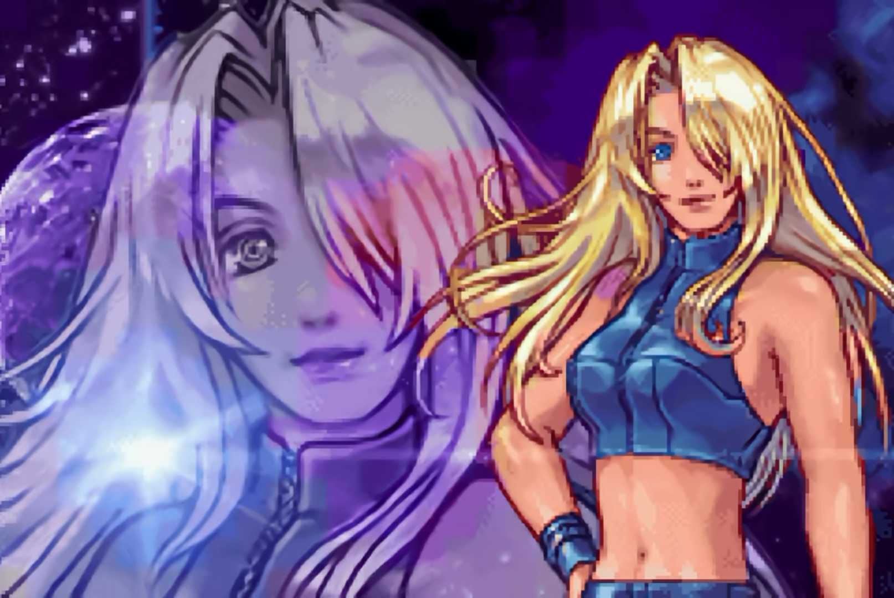

The gametype of Hollow Knight series
Hollow Knight is a genre of game called Metroidvania.
The term Metroidvania is the combination of Metroid and Castlevania.
Metroidvania games primarily focus on non-linear exploration(非线性探索), map progression(地图解锁), and ability-gated progression(能力驱动).
It is the combination of Metroid and Castlevania
Introduction
Metroid
It's an action-adventure game franchise created by Nintendo.
The player controls the bounty hunter Samus Aran, who protects the galaxy from Space Pirates and their attempts to harness the power of the parasitic Metroid creatures.
Metroid combines the platforming of Super Mario Bros. and the exploration of The Legend of Zelda with a science fiction setting and an emphasis on nonlinear gameplay.
Personally, its my favourite game series
Samus is also the FIRST female playable character in game history.


Castlevania
It is a gothic horror action-adventure video game series and media franchise created by Konami. It forms the combat element of the Metroidvania gameplay.

The 1997 game, Castlevania: Symphony of the Night, returned to the nonlinear gameplay, also introduced role-playing elements and exploration. Is usually consider one of the best Castlevania game